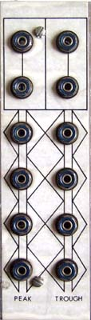

|
Classic Serge

The following are presented for educational/historic purposes only and are not to scale. These designs are copyright Serge Tcherepnin. Some info on the 1973 variant of the Peak and Trough module: Functionally it is remarkably simple. Diodes form the linear equivalent of an OR gate or an AND gate. There is a 0.6V voltage loss across the diodes. This is followed by a complementary emitter follower which loses 0.6 volts in the opposite direction, thus compensating for the loss in the diodes. A constant current source acts as a pull-up or pull-down for the emitter follower. The "no inputs" base state is derived from a resistor pull-up or pull down to an appropriate voltage rail, while using another diode to clamp it to either 6 volts (trough) or 0 volts (peak). FD6666 diodes were used, though any common silicon signal diode would do. Generic general purpose silicon signal transistors can be substituted.
PCB connections:
Page design copyright 1999 by Ken Stone
|
{kind=link}
{kind=link}
{kind=link}
{kind=link}